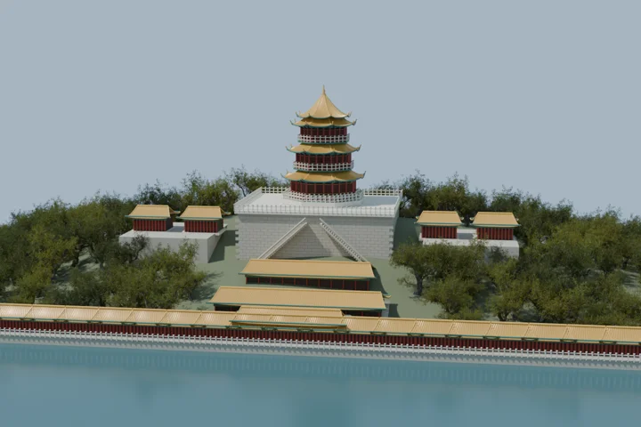

REAL3D / SCENE 002
佛香阁A study of Foxiang Pavilion.
从湖面看向山林中的重檐楼阁。
参照视频重建的可旋转建筑习作。
实时三维

PREPARING YOUR VISIT
正在打开佛香阁场景
正在下载三维场景…
拖动旋转 · 滚轮缩放 · 右键平移
一个场景，多种视角。楼阁、瓦垄、台基、阶梯和树木都来自同一个三维模型。触屏支持单指旋转、双指缩放和平移。
“Blender 渲染图”为离线路径追踪渲染；自由探索使用实时光照，树叶、水面和阴影表现会有所不同。这是视觉习作，建筑比例与构造未经测绘核验。
素材与场景说明
建筑与地形由参数化脚本建模；树木扫描素材来自 Poly Haven（CC0）。查看完整素材来源。网页仅在你的浏览器渲染。